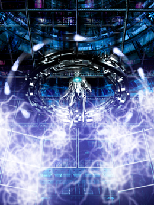
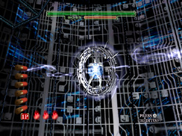
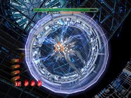
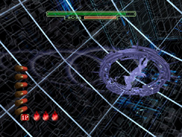
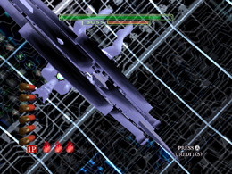
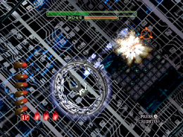
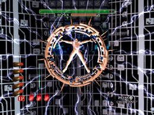
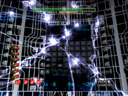

HODIII WHEEL OF FATE
ボス攻略 HODIII

「WHEEL OF FATE」の弱点は、胸部中央の白く光っている部分だ。
弱点が小さい上に、「WHEEL OF FATE」がこちらに背中を向けている間や、
「WHEEL OF FATE」が、まとっているリングはこちらの攻撃をはじくため、
攻撃を当てるのは難しいぞ。
「WHEEL OF FATE」の攻撃パターンは多彩なので、対応するためには、
連射力、命中精度、的確なリロードタイミング、すべてが要求される。
また、次にくるのはどの攻撃か、「WHEEL OF FATE」の動きを見て判断し、
的確に攻撃準備をすることも重要だ。
「WHEEL OF FATE」の攻撃パターンは5種類だ。
最初のうちは攻撃パターン【1】【2】【3】からランダムで攻撃を切り替えて
くるぞ。体力が半分になると、「光球飛ばし」、4分の1以下になると
「雷弾乱れ撃ち」を放ってくる。
【1】光の輪飛ばし

体を縮めて力を蓄えている間は、弱点が隠れてしまい、弾を撃ちこんでも
攻撃は当たらない。攻撃の瞬間にそなえて、神経をとぎすませろ。
「WHEEL OF FATE」が光の輪を発射したら攻撃開始だ。光の輪は
中央から左右に弧を描いて迫ってくるぞ。
まず中央部に向けて6連射し、続けざまにリロードして撃ち損じた
光の輪を始末しろ。余裕があったらさらに中央奥の「WHEEL OF FATE」本体も
攻撃するんだ。
【2】体当たり

この攻撃の時には、「WHEEL OF FATE」はまっすぐ迫ってくるので、
狙いやすくはあるが、6発全弾命中させても、「WHEEL OF FATE」を
押し戻すことはできない。
高速連射、リロード、そして再連射をすばやく行う必要があるぞ。
無駄なリロードを避けるため「WHEEL OF FATE」がこちらを向くまでは
待機して、こちらに迫ってきた瞬間から一気に撃ち込みを開始するんだ。
【3】高速遊泳

超高速で動き回る「WHEEL OF FATE」の小さな弱点を射抜く狙撃力が
試されるぞ。
さらにリングが弱点を隠したり、「WHEEL OF FATE」がこちらに背中を
向けたりするので、射撃のチャンスは少ない。
折角のチャンスで弾切れを起こさないよう、連射は避け、「WHEEL OF
FATE」の動きをしっかりとその目で捉えるんだ。
飛び回っている間をとらえることが難しいなら、ダメージ覚悟で、飛び回って
いる途中で一瞬停止するタイミングだけを狙うのもありだ。
この攻撃の最後に「WHEEL OF FATE」はこちらに体当たりをしかけてくるぞ。

最後に接近してくる一瞬は、距離が近いので、大ダメージを与える
チャンスだ。すぐ近くまで迫っていても、諦めずに攻撃を続けるんだ。
【4】光球飛ばし

「WHEEL OF FATE」が光球を作りだしてる間にできるかぎり弱点に
撃ちこむんだ。そして「WHEEL OF FATE」が光球を発射し始めたら
リロードし、飛んでくる光球をすばやく処理しろ。
光球は動きが遅いため、処理する合間に「WHEEL OF FATE」本体に
攻撃をしかけたくなるだろうが、無理に攻撃を当てようとすると、すぐに
光球によるダメージを受けてしまうぞ。
一旦、本体は無視して光球に集中するんだ。光球を消し切ったら、
ふたたび本体の弱点を狙って撃て。
【5】雷弾乱れ撃ち

ここまできたら、あと一息だ。
まず「WHEEL OF FATE」が放電するまでに、全神経を集中させて弱点に
向かって連射しておくんだ。
放電が行われたら、振り向く瞬間にリロードし、雷弾を撃ち落とせ。

雷弾は数が多いので、まずは密集したところを撃って数を減らして、
それから撃ち損ねた雷弾を処理するのがいいだろう。
雷弾は数こそ多いが、動きは遅い。落ち着いて手前にある雷弾から
順に撃っていけば、全弾を消すことはそう難しくない。
全弾を消すとふたたび「WHEEL OF FATE」と対峙する番だ。全勢力を
注いで撃ち込みを再開して、勝利をその手にもぎとるんだ。
 RSS
RSS